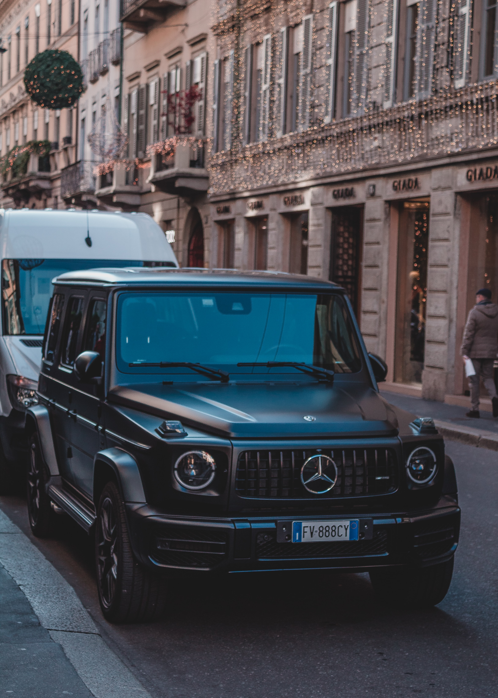

Mercedes-Benz is both a German automotive marque and, from late 2019 onwards,
a subsidiary (Mercedes-Benz AG) of Daimler AG. Mercedes-Benz is known for producing luxury vehicles
and commercial vehicles. The headquarters is in Stuttgart.
The name first appeared in 1926 under Daimler-Benz.
In 2018, Mercedes-Benz was the largest seller of premium vehicles in the world,
having sold 2.31 million passenger cars.

The company's origins come from Daimler-Motoren-Gesellschaft's 1901 Mercedes and Karl Benz's 1886 Benz Patent-Motorwagen, which is widely regarded as the first internal combustion engine in a self-propelled automobile. The fuel was not gasoline, it was a much more volatile petroleum spirit with several names including ligrane/ligrain/ligroin. This was used as a degreaser, spot remover, paint thinner, etc. and was so quick to burn or explode, it was not stored inside. The slogan for the brand is "the best or nothing".